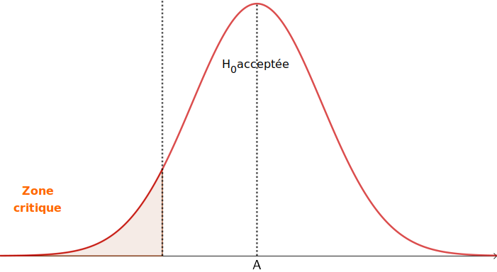
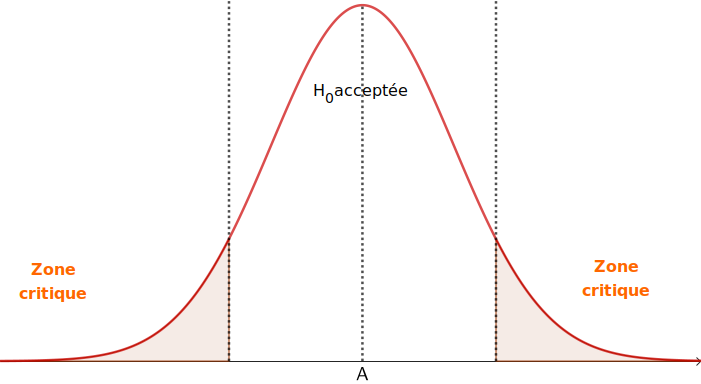
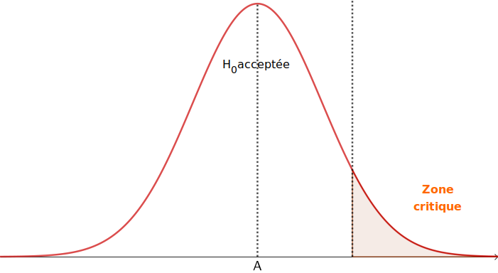

BTS - Statistique Inférentielle - Cours
Résultats préliminaires
Introduction
But : On étudie un caractère réel (par exemple : taille, énergie, ...) sur une population en cherchant, à partir d'un échantillon de cette population, à retrouver les indicateurs du caractère (moyenne, écart-type, ...).
Inférence : Opération logique par laquelle on admet une proposition en vertu de sa liaison avec d'autres propositions déjà tenues pour vraies (le Robert).
Rappels
Rappels :
-
Lorsque \(X\) est une variable aléatoire :
- \(\textrm{Var}(X) = \mathbb{E}(X^2)-\left(\mathbb{E}(X)\right)^2\) et \(\sigma(X) = \sqrt{\textrm{Var}(X)}\) (variance et écart-type)
-
si a et b sont deux constantes :
- \(\mathbb{E}(aX+b)=a\mathbb{E}(X)+b\)
- \(\textrm{Var}(aX+b)=a^2\textrm{Var}(X)\)
-
Lorsque \(S = X_1 + \cdots + X_n\) est une somme de variables aléatoires :
- \(\mathbb{E}(S) = \mathbb{E}(X_1)+\cdots+\mathbb{E}(X_n)\) : les espérances s'ajoutent ;
- \(\textrm{Var}(S) = \textrm{Var}(X_1)+\cdots+\textrm{Var}(X_n)\) : les variances s'ajoutent si les variables aléatoires sont indépendantes.
Montrer que si \(X\) est une variable aléatoire d'espérance \(\mu\) et d'écart-type \(\sigma\), alors \(Z = \dfrac{X-\mu}{\sigma} \) est une variable aléatoire d'espérance 0 (on dit centée) et d'écart-type 1 (on dit réduite).
Exprimer \(X\) en fonction de \(Z\) et compléter (a, b sont des constantes):
\(a\leqslant Z \leqslant b \Leftrightarrow \ldots\ldots\ldots \leqslant X \leqslant \ldots\ldots\ldots\)
\(X_1 , \ldots , X_n\) sont des variables aléatoires indépendantes. On note \(\overline{X}=\frac{1}{n}\left(X_1+\cdots+X_n\right)\).
- Montrer que \(\mathbb{E}\left(\overline{X}\right)=\frac{1}{n}\left(\mathbb{E}(X_1)+\cdots+\mathbb{E}(X_n)\right)\) et que \(\textrm{Var}\left(\overline{X}\right)=\frac{1}{n^2}\left(\textrm{Var}(X_1)+\cdots+\textrm{Var}(X_n)\right)\)
- En déduire que si tous les \(X_i\) ont même moyenne \(\mu\), même variance \(v\) et donc même écart-type \(\sigma\), on a :
- \(\mathbb{E}\left(\overline{X}\right)=\mu\) ;
- \(\textrm{Var}\left(\overline{X}\right)=\dfrac{v}{n}\) ; en déduire que \(\sigma\left(\overline{X}\right)=\dfrac{\sigma}{\sqrt{n}}\)
- Montrer que si les \(X_i\) suivent une loi de Bernoulli (\(X=1\) avec une probabilité \(p\), sinon \(X=0\)), alors :
- \(\mathbb{E}(S)=np\) et \(\sigma(S)=\sqrt{np(1-p)}\) : en effet, une variable aléatoire suivant une loi binomiale est une somme de variables aléatoire indépendantes suivant une loi de Bernoulli de même paramètre \(p\).
- \(\mathbb{E}\left(\overline{X}\right) = p\)
- \(\sigma\left(\overline{X}\right) = \sqrt{\dfrac{p(1-p)}{n}} \)
Modèle
- Une population de taille N est modélisée par un ensemble de variables aléatoires \(\left\{Y_1,\dots,Y_N\right\}\), qui représentent le caractère mesuré sur chaque individu.
On suppose, sauf cas particulier, que ces variables aléatoires suivent la même loi et sont indépendantes.
- On sélectionne n individus, qui forment un échantillon de taille n<N ; on a donc un ensemble de variables aléatoires \(\left\{X_1,\ldots,X_n\right\}\), tel que, par exemple, \(X_1=Y_3\), \(X_2=Y_{14}\), ...
- Une réalisation de cette échantillon consiste à donner à chaque variable aléatoire de l'échantillon une valeur réelle, selon la loi suivie par cette variable aléatoire : on mesure le caractère étudié sur l'échantillon.
Une réalisation d'un n-échantillon se traduit donc par l'obtention de n valeurs : \(x_1,\ldots,x_n\) (notées en minuscule).
- On appelle estimateur sur un échantillon de taille n fonction (à valeurs réelles) de n variables \(h(x_1,\ldots,x_n)\) ;
par exemple \(h(x_1,\ldots,x_n)=\frac{1}{n}\left(x_1+\cdots+x_n\right)\) (formule de la moyenne, notée \(\overline{x}\) en statistiques), ou bien \(h(x_1,\ldots,x_n)=x_1\times x_2\) (peu d'utilité).
- \(h(X_1,\ldots,X_n)\) étant une variable aléatoire, on peut noter \(\mathbb{E}(f)\), si elle existe, l'espérance de l'estimateur \(f\).
- Par essence, l'estimateur vise à approcher un paramètre de la population (par exemple la moyenne du caractère observé sur la population, une proportion, ...).
Ainsi, lorsque \(k\) est la notation du paramètre approché, on peut noter l'estimateur \(\widehat{k}\) (avec un accent circonflexe), lorsqu'il n'y a pas d'ambigüité.
- Pour mesurer l'erreur entre l'estimation et la réalité, on utilise le biais \(\mathbb{B}\), défini par \(\mathbb{B}\left(\widehat{k}\right) = \mathbb{E}\left(\widehat{k}\right)-k\).
Lorsque son biais est nul, on dit que l'estimateur est sans biais.
L'estimateur \(\widehat{\overline{x}} = \frac{1}{n}\left(x_1+\cdots+x_n\right)\) est sans biais.
Démonstration : On note \(\mu\) la moyenne sur la population entière.
\(\mathbb{B}\left(\widehat{\overline{X}}\right)
= \mathbb{E}\left(\frac{1}{n}\left(X_1+\cdots+X_n\right)\right)-\mu
= \frac{1}{n}\left(\mathbb{E}\left((X_1\right)+\cdots+\mathbb{E}\left(X_n\right)\right)-\mu
= \frac{1}{n}\left(\mu+\cdots+\mu\right)-\mu
= \frac{1}{\cancel{n}}\cancel{n}\mu-\mu=0 \)
On note \(\overline{X}\) la variable aléatoire définie par \(\overline{X}=\frac{1}{n}\left(X_1+\cdots+X_n\right)\) et on note \(V\) la variable aléatoire définie par \(V=\overline{X^2}-\overline{X}^2\).
On suppose que \(X_1,\ldots,X_n\) ont toutes pour espérance \(\mu\) et pour variance \(v\).
Démontrer que \(\mathbb{E}(V)=\dfrac{n-1}{n}v\) ; (utiliser \(\mathbb{E}(T^2)=\textrm{Var}(T)+\mathbb{E}(T)^2\)) ;
en déduire que le calcul de la variance sur l'échantillon ne fournit pas un estimateur sans biais de la variance sur la population ;
en déduire qu'un estimateur sans biais de la variance sur la population est donné par \(\dfrac{n}{n-1}V\).
Écart-type ponctuel (ou corrigé)
On utilise l'écart-type ponctuel ou corrigé \(s_n=\sqrt{\frac{n}{n-1}}\sigma_n\) comme estimateur de l'écart-type sur la population globale ; \(\sigma_n\) étant l'écart-type calculé sur un échantillon de taille n.
Intervalle de confiance
On ne connaît pas la valeur moyenne µ d'un caractère observé sur la population.
Pour calculer l'
intervalle de confiance \(I_c\) de la moyenne µ
de risque 𝛼
(ou
de confiance 1-𝛼) à partir d'un échantillon E de taille n :
| confiance 1-𝛼 |
0,99 |
0,98 |
0,95 |
0,90 |
| risque 𝛼 |
0,01 |
0,02 |
0,05 |
0,10 |
| z |
2,58 |
2,33 |
1,96 |
1,65 |
Intervalle de confiance d'une moyenne
- on détermine la valeur \(z\) telle que \(P(-z\leqslant Z \leqslant z) = 1-\alpha\), (\(Z\) désignant une variable aléatoire suivant une loi normale centrée réduite) ;
- on calcule la moyenne \(\overline{x}\) sur l'échantillon E.
- si l'on connaît l'écart-type \(\sigma\) sur la population : \(I_c = \left[\overline{x}-z\frac{\sigma}{\sqrt{n}} ; \overline{x}+z\frac{\sigma}{\sqrt{n}} \right] \)
- si l'on ne connait pas l'écart-type sur la population, on utilise l'écart-type ponctuel \(s_n\) (corrigé) et : \(I_c = \left[\overline{x}-z\frac{s_n}{\sqrt{n}} ; \overline{x}+z\frac{s_n}{\sqrt{n}} \right] \)
Intervalle de confiance d'une moyenne
Une machine produit des tubes dont la longueur doit être fixée. On prélève 100 tubes dans la production :
| Longueur |
[994;998[ |
[998;1002[ |
[1002;1006[ |
| Nombre |
26 |
70 |
4 |
On s'intéresse à la longueur moyenne µ des tubes sur l'ensemble de la production.
- Déterminer un intervalle de confiance au risque de 5%.
- Déterminer un intervalle de confiance au risque de 1%.
- 1000mm est-il une moyenne réaliste ?
On ne connaît pas la valeur p d'une proportion observée sur la population.
Pour calculer l'intervalle de confiance \(I_c\) de la proportion p, de risque 𝛼
(ou de confiance 1-𝛼) à partir d'un échantillon E de taille n :
Intervalle de confiance d'une proportion
- on détermine la fréquence f observée sur l'échantillon E ;
- lorsque p n'est pas très proche de 0 ou 1 et que n\(\geqslant\)30, on utilise la loi normale centrée réduite pour déterminer la valeur \(z\) telle que \(P(-z\leqslant Z \leqslant z) = 1-\alpha\), sinon on utilise une loi binomiale (cf exercice) ;
-
\(\sqrt{\frac{f(1-f)}{n-1}}\) étant une estimation ponctuelle de l'écart-type sur la population on a : \(I_c = \left[f-z\sqrt{\frac{f(1-f)}{n-1}} ; f+z\sqrt{\frac{f(1-f)}{n-1}} \right] \)
Intervalle de confiance d'une proportion
D'après un sondage sur n=2501 personnes, \(\widehat{p}=51\%\) souhaitent voter pour le candidat A. On note \(p\) la proportion de personnes votantes pour A dans la population.
- Déterminer un intervalle de confiance au risque de 5%.
- Le candidat A est-il presque sûr (à 95%) d'être élu ?
- Déterminer la taille n qu'aurait dû avoir l'échantillon si la réponse à la question précédente est négative
Tests de validité d'hypothèse
On veut tester l'hypothèse qu'une certaine valeur \(a\), existante mais non connue, sur une population donnée, correspond bien à une valeur fixée \(A\), ou bien a «changé».
-
On prélève un échantillon de taille n dans la population.
-
On énonce l'hypothèse nulle, notée H0, qui correspond à une situation «inchangée» : \(H_0 : a=A\).
-
On détermine l'hypothèse alternative, notée H1, qui est l'hypothèse que l'on peut montrer avec le test : 3 possibilités.
- On fixe un niveau de confiance/risque et on détermine l'intervalle de test, noté \(I_t\), qui correspond à l'intervalle de confiance de risque \(\alpha\) sauf dans le cas d'un test unilatéral où on remplace une de ses bornes par l'infini.
L'extérieur de cet intervalle est appelé zone critique.
-
On applique la règle de décision qui suit :
-
si \(\widehat{a}\), obtenu sur l'échantillon, appartient à \(I_t\), on accepte \(H_0\) au niveau de confiance \(1-\alpha\) ;
-
sinon \(\widehat{a}\) est dans la zone critique, et on rejette \(H_0\) au seuil \(\alpha\).
| test unilatéral à gauche |
test bilatéral |
test unilatéral à droite |
| \(H_1 : a\leqslant A\) |
\(H_1 : a\neq A\) |
\(H_1 : a\geqslant A\) |
| \(I_t=\left[A-h;+\infty\right[\) |
\(I_t=\left[A-h;+A+h\right]\) |
\(I_t=\left]-\infty; A+h\right]\) |
|  |
 |
 |
Proposer un test visant à vérifier si le rythme cardiaque ralentit suite à un don du sang.
Erreur de première et deuxième espèce ; puissance
(lors d’un test, il y a un risque de se tromper)
| Décision \ réalité |
H0 vraie |
H1 vraie |
H0 acceptée |
bonne décision \((1-\alpha)\) |
risque \(\beta\) 2nde espèce |
H1 acceptée |
risque \(\alpha\) 1re espèce |
bonne décision \((1-\beta) = \)puissance |
-
l'erreur de première espèce \(\alpha\) correspond au risque de rejeter H0 alors qu’elle est vraie (faux positif).
- l'erreur de deuxième espèce \(\beta\) correspond au risque d’accepter H0 alors qu’elle est fausse (faux négatif).
-
La puissance du test est le risque de rejeter H0 alors qu’on doit en effet rejeter H0.
Test bilatéral relatif à une proportion : Jeu de pile ou face
Pour vérifier qu'une pièce est bien équilibrée (non truquée), on jette n=100 fois cette pièce et on note \(X\) la variable aléatoire comptant le nombre de pile obtenus ; le but de l'exercice est de construire un test.
- Formuler l'hypothèse nulle H0 correspondant à une pièce bien équilibrée ; quelle est l'hypothèse alternative H1 dans le cas d'un test bilatéral.
- Calculer un intervalle de confiance au risque α de 5%, en récisant la zone critique, et en utilisant :
- une loi binomiale
- une loi normale ; y a-t-il réellement une différence ?
- Énoncer la règle de decision.
- On sait qu'il existe sur le marché des pièces truquées qui donnent pile dans 2 cas sur 3. Déterminer le risque β de seconde espèce (accepter que la pièce ne soit pas truquée sachant qu'elle l'est) et donner la puissance du test.
- Recommencer dans le cas d'un dé (X compte le nombre de 6), on fixe le test à 50 lancers. Y a-t-il une différence entre l'utilisation de la loi normale et binomiale pour l'intervalle de fluctuation, dans ce cas ?